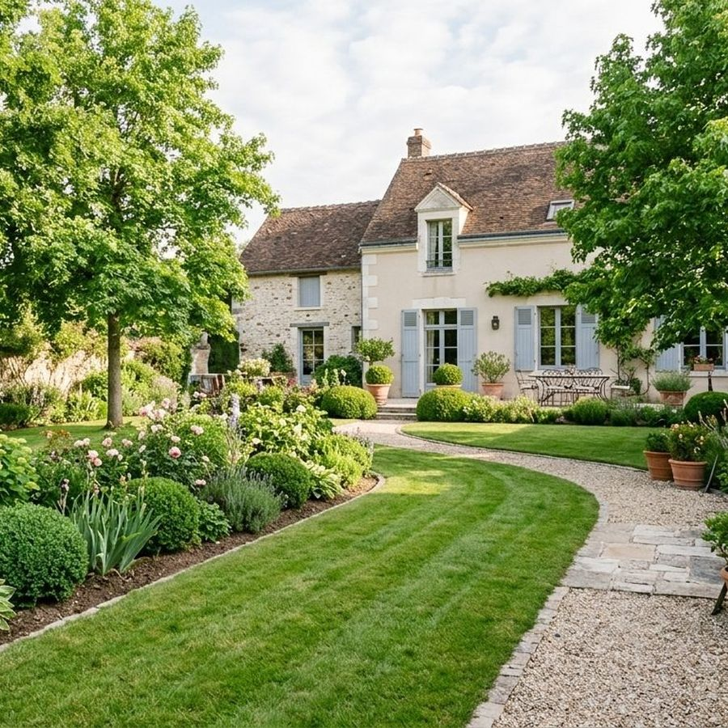
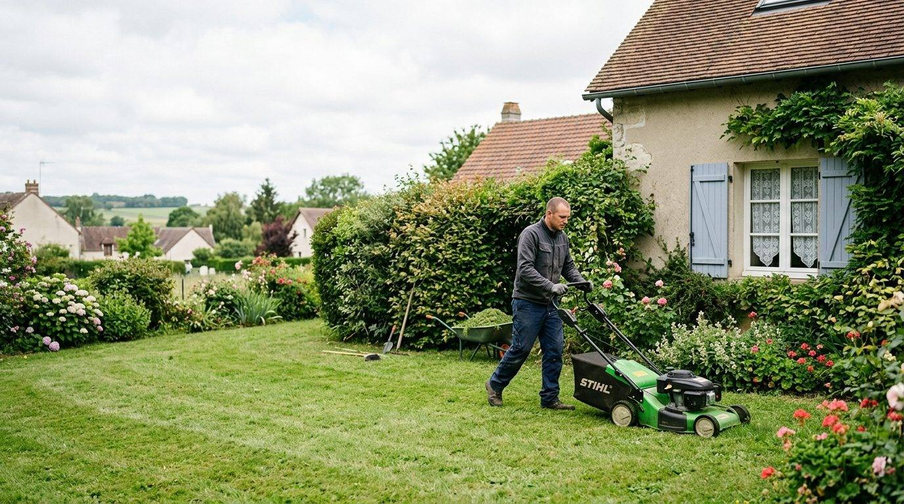
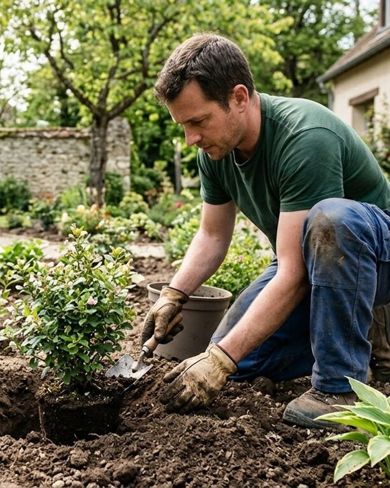
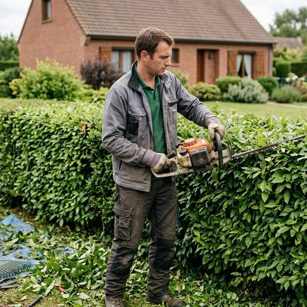
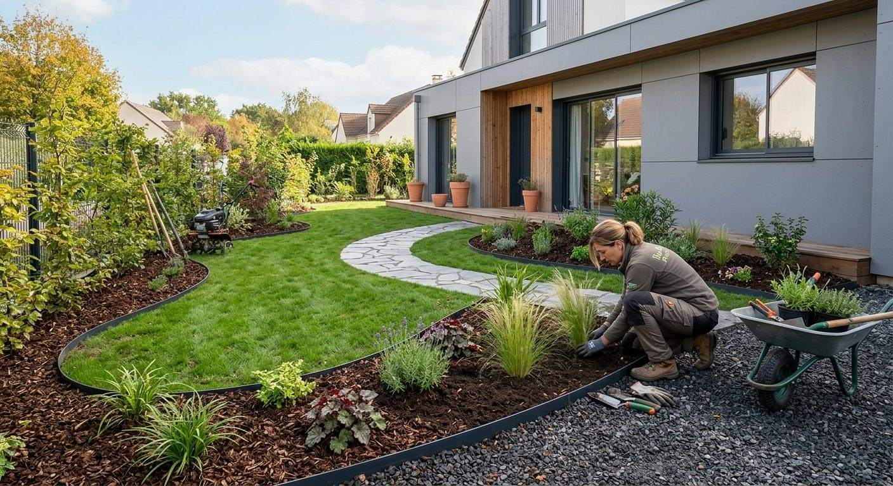

L’écoute
Nous écoutons votre demande lors d’un rendez-vous pour l’élaboration du devis.
Paysagiste à Ollainville (91)
Brossard Fils entretient et crée les jardins des particuliers, des syndics et des entreprises, en Essonne et parfois dans toute l’Île-de-France. Plus de 25 ans d’expérience.

Nos prestations
Pour les particuliers, les syndics et les entreprises du bâtiment.

Taille des haies, bêchage, tontes et débroussaillage, ramassage des feuilles, scarification.
En savoir plus →Création de pelouse en plaques ou par semis, nivellement de terrain.
En savoir plus →Pourquoi nous choisir ?
Quatre engagements, du premier rendez-vous à la fin du chantier.
Nous écoutons votre demande lors d’un rendez-vous pour l’élaboration du devis.
Nos conseils vous permettent de réaliser le jardin dont vous avez toujours rêvé.
Nous veillons à la qualité et au suivi de nos chantiers.
Ce que nous vous annonçons, nous le tenons.
À propos
Bernard Brossard a créé l’entreprise il y a presque 30 ans. Fils d’horticulteur de père en fils, il a transmis la passion du jardin d’agrément et la curiosité des végétaux : couleurs, parfums, formes.
Après dix ans à ses côtés, Jérémie, rejoint depuis par son frère Charles, a décidé de suivre son exemple.
Découvrir l’entreprise


Contact
Décrivez votre projet : nous vous répondons pour convenir d’un rendez-vous et établir un devis.